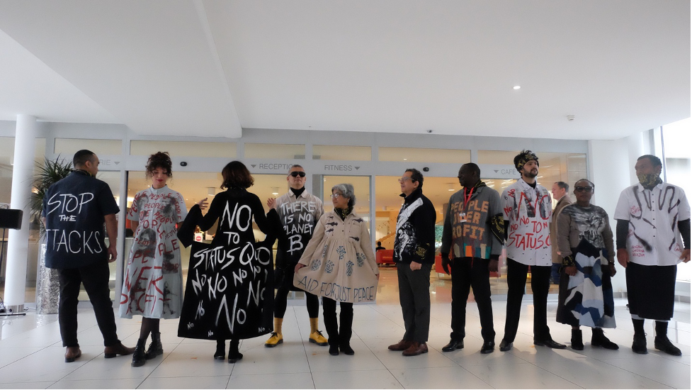
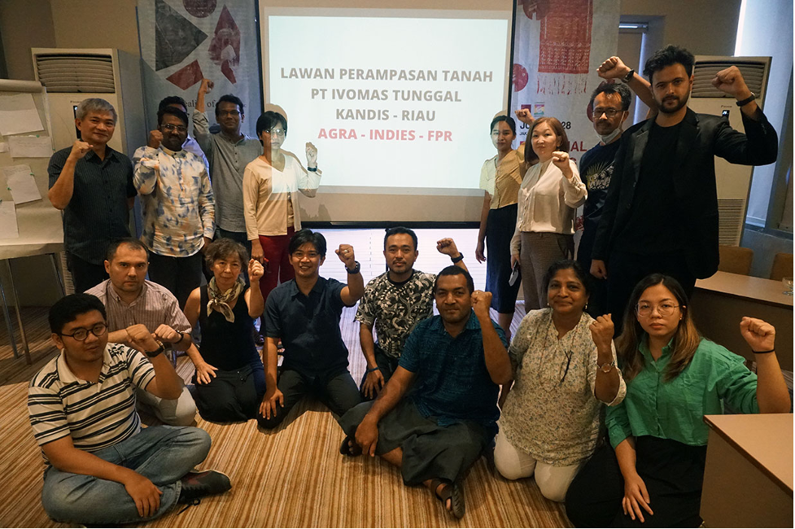

About CGGAP

The Center for Good Governance and Peace (CGGAP) is a non-profit and non-governmental organization dedicated to peacebuilding, good governance, and youth empowerment. Founded in 2016 by a coalition of young professionals and human rights activists, CGGAP operates as a bridge between community-led initiatives in Nepal and international policy discourse in New York City.
Originally established in Kathmandu, CGGAP has expanded its footprint to include a strategic presence in New York to facilitate global partnerships, engage with the international development community, and share localized insights on conflict resolution and democratic governance. We combine action-oriented research with strategic dialogue to influence policy, share information, and build sustainable peace at the community, national, and regional levels.
vision and mission
The vision of CGGAP is to foster societies that are peaceful, equitable, well-governed, and democratic, where justice and human rights are upheld across borders.
The mission of CGGAP is to understand and prevent violence while building sustainable peace through the practice of good governance. CGGAP collaborates with diverse communities to generate knowledge, shape public discourse, and hold institutions accountable. By operating at the intersection of local grassroots work in Nepal and global advocacy in New York, we promote social cohesion, gender equality, and active citizenship.

team
Adhiraj Regmi serves as the Program Manager at CGGAP, where he leads key initiatives focused on youth empowerment and financial literacy. He is the driving force behind the flagship financial literacy program, 'Artha Shree', dedicated to improving financial knowledge and inclusion across Nepal.
In addition to his role at CGGAP, Adhiraj is a Board Member of the National Youth Council, actively contributing to youth development policies and advocacy at the national level.
Email: adhirajreg@gmail.com
Upakar Pandey brings over 12 years of expertise in nonprofit management, fundraising, strategic partnerships, and communications. As a graduate of the University of Washington with a degree in Journalism and New Media, he leverages strategic communication and digital tools to amplify CGGAP’s global mission.
Based in the New York City metropolitan area, he steers the Center’s long-term strategy, secures vital funding streams, and builds cross-continental alliances. Through robust partnership development and forward-looking institutional growth, he is dedicated to strengthening CGGAP's footprint within the global humanitarian landscape.
Email: pandeyupakar@gmail.com